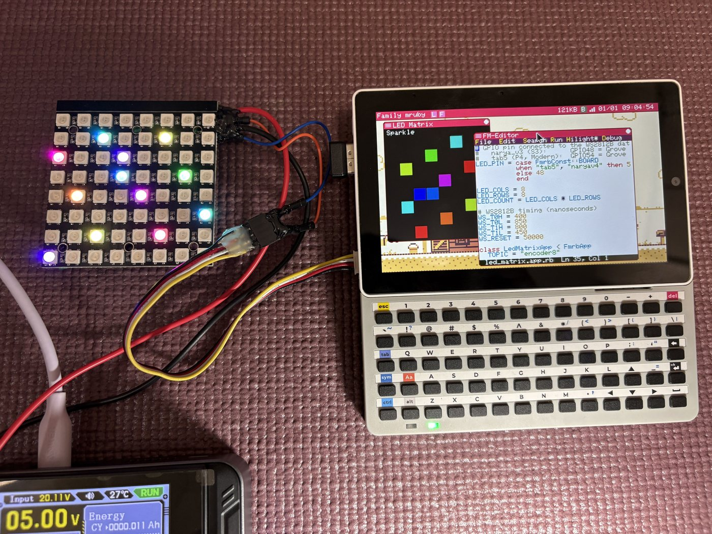

Hardware Control (GPIO / I2C / RMT / RTC)¶
APIs for operating hardware peripherals from Ruby.
Note
For pin layouts and electrical specifications, see Hardware.
To check whether a pin is already in use by another function, use FmrbHw.pin_status.
Pin numbers differ between the machines
The GROVE pins are not the same on Retro and Modern, so an app that hardcodes a number runs on one machine only. Branch on the board instead:
ruby
sda, scl = case FmrbConst::BOARD
when "tab5", "naryav4" then [53, 54] # Tab5 GROVE
else [47, 48] # narya-board GROVE 2
end
Some pins are held by the system and cannot be acquired at all — see Hardware for the reserved list on each machine.
GPIO¶
Digital input/output.
Constructor¶
GPIO.new(pin, flags, alt_function = 0)
| Argument | Purpose |
|---|---|
pin |
GPIO number |
flags |
Direction and pull configuration (can be OR-combined) |
alt_function |
Alternate function number (normally 0) |
flags Constants¶
| Constant | Meaning |
|---|---|
GPIO::IN |
Input |
GPIO::OUT |
Output |
GPIO::HIGH_Z |
High impedance |
GPIO::PULL_UP |
Pull-up resistor enabled |
GPIO::PULL_DOWN |
Pull-down resistor enabled |
GPIO::OPEN_DRAIN |
Open drain output |
GPIO::ALT |
Alternate function |
Combine with OR:
btn = GPIO.new(10, GPIO::IN | GPIO::PULL_UP)
led = GPIO.new(11, GPIO::OUT)
Instance Methods¶
| Method | Purpose |
|---|---|
read |
Read the level (0 / 1) |
write(val) |
Output 0 or 1 |
high? |
Returns true if the level is High |
low? |
Returns true if the level is Low |
Class Methods (Direct Operation Without Creating an Instance)¶
| Method | Purpose |
|---|---|
GPIO.read_at(pin) |
Read level |
GPIO.write_at(pin, val) |
Output level |
GPIO.high_at?(pin) / GPIO.low_at?(pin) |
Level check |
GPIO.set_dir_at(pin, dir) |
Change direction only |
GPIO.pull_up_at(pin) / GPIO.pull_down_at(pin) |
Enable pull resistor |
GPIO.open_drain_at(pin) |
Open drain |
GPIO.set_function_at(pin, alt) |
Alternate function |
Example: Toggle LED with a Button¶
class LedToggle < FmrbApp
BTN_PIN = 10
LED_PIN = 11
def on_create
@btn = GPIO.new(BTN_PIN, GPIO::IN | GPIO::PULL_UP)
@led = GPIO.new(LED_PIN, GPIO::OUT)
@led.write(0)
@prev = 1
end
def on_update
cur = @btn.read
if @prev == 1 && cur == 0 # Falling edge
@led.write(@led.read == 1 ? 0 : 1)
end
@prev = cur
20
end
end
LedToggle.new.start
I2C¶
Communicates with devices via the I2C bus.
Constructor¶
I2C.new(unit:, frequency: 100_000, sda_pin: -1, scl_pin: -1, timeout: 500)
| Argument | Purpose |
|---|---|
unit: |
Bus identifier. e.g. "ESP32_I2C0", "ESP32_I2C1" |
frequency: |
Clock frequency (Hz). Default 100kHz |
sda_pin: / scl_pin: |
-1 uses the default pins |
timeout: |
Timeout in ms |
Methods¶
| Method | Purpose |
|---|---|
read(addr_7bit, length, timeout: @timeout, *write_data) |
Read (write_data triggers a write first, then read without STOP) |
write(addr_7bit, *data, timeout: @timeout) |
Write. Accepts Integer / Array<Integer> / String |
scan(timeout: @timeout) |
Scan addresses 0x08 to 0x77 and return a list of responding devices |
close |
Release the bus |
Example: Scanning I2C Devices¶
i2c = I2C.new(unit: "ESP32_I2C0", frequency: 400_000)
addrs = i2c.scan
Log.info("found: #{addrs.map { |a| a.to_s(16) }.join(', ')}")
Example: Register Read/Write¶
i2c = I2C.new(unit: "ESP32_I2C0")
# Read 4 bytes starting from register 0x10
data = i2c.read(0x32, 4, 0x10) # Arguments after the 2nd are write_data
i2c.write(0x32, 0x10, 0xAB) # Write 0xAB to register 0x10
RMT¶
Drives WS2812B / WS2812 LEDs and infrared remotes via the ESP32 RMT peripheral.
Constructor¶
RMT.new(pin, t0h_ns:, t0l_ns:, t1h_ns:, t1l_ns:, reset_ns:)
Specifies NRZ encoding timing in nanoseconds. Standard values for WS2812B:
rmt = RMT.new(8,
t0h_ns: 350, t0l_ns: 900,
t1h_ns: 700, t1l_ns: 600,
reset_ns: 50_000)
Methods¶
| Method | Purpose |
|---|---|
write(*params) |
Output byte sequence. Accepts Integer / Array / String arguments |
Example: Lighting WS2812B LEDs¶
class LedStrip < FmrbApp
RMT_PIN = 8
def on_create
@rmt = RMT.new(RMT_PIN,
t0h_ns: 350, t0l_ns: 900,
t1h_ns: 700, t1l_ns: 600,
reset_ns: 50_000)
set_color(0xFF, 0x00, 0x00) # Red
end
def set_color(r, g, b)
# WS2812B uses GRB order
@rmt.write([g, r, b])
end
end
LedStrip.new.start
A WS2812B matrix sample is available in /app/demo/led_matrix.app.rb.

The app draws the same pattern on screen as it sends to the panel, so you can see what it
intends to do even with nothing wired up. Note the LED_PIN branch on FmrbConst::BOARD
near the top of the source — the GROVE pins differ between the machines.
Real-Time Clock (RX8900 / RX8130)¶
Both machines carry a battery-backed RTC on the I2C bus, at address 0x32. The part differs:
| Machine | Part | Class |
|---|---|---|
| Retro (narya-board) | RX8900, on I2C1, shared with GROVE 1 | RX8900 |
| Modern (M5Stack Tab5) | RX8130, on the internal bus | RX8130 |
The two classes take the same arguments and answer to the same methods, so an app that picks the class by board runs on either:
i2c = I2C.new(unit: "ESP32_I2C0")
rtc = FmrbConst::BOARD == "tab5" ? RX8130.new(i2c) : RX8900.new(i2c)
rtc.sync_system_clock
Methods¶
| Method | Return value / purpose |
|---|---|
init |
Initialise the RTC |
read_time |
{year:, month:, day:, hour:, minute:, second:, wday:} |
write_time(hash) |
Write a time |
sync_system_clock |
Set the system clock from the RTC. true on success |
vlf? |
Low-voltage flag. true means the stored time may be lost |
temperature |
Temperature in Celsius (Float). RX8900 only |
Example: sync the clock at startup¶
class ClockSyncApp < FmrbApp
def on_create
i2c = I2C.new(unit: "ESP32_I2C0")
rtc = FmrbConst::BOARD == "tab5" ? RX8130.new(i2c) : RX8900.new(i2c)
if rtc.vlf?
Log.warn("RTC battery low; resetting")
rtc.write_time(year: 2026, month: 1, day: 1,
hour: 0, minute: 0, second: 0, wday: 4)
end
rtc.sync_system_clock
now = rtc.read_time
Log.info("time: #{now[:year]}-#{now[:month]}-#{now[:day]} #{now[:hour]}:#{now[:minute]}")
end
end
ClockSyncApp.new.start
You usually do not need this
The system syncs from the RTC at boot, and FmrbApp.wallclock /
FmrbApp.set_wallclock go through the system clock (POSIX epoch), which also writes
back to the RTC. Reach for the driver classes only when you want the chip's own
features — the low-voltage flag, or the RX8900's temperature sensor.
Pin Assignment Check¶
Before using a pin, you can check whether the system is already using it.
unless FmrbHw.pin_available?(10)
Log.error("Pin 10 already in use: #{FmrbHw.pin_status(10)}")
return
end
For details, see FmrbHw.